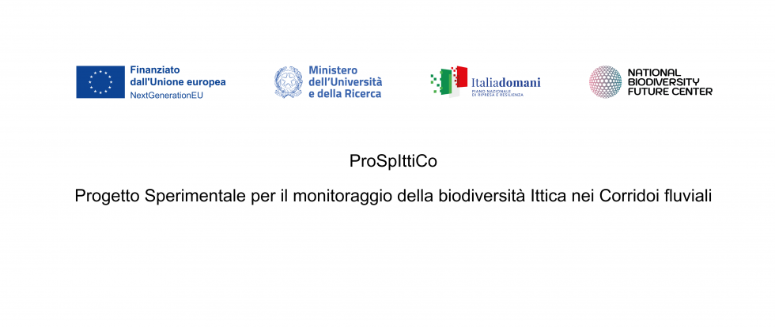

News ·
Iniziato il Progetto ProSpIttiCo!

Graia è soggetto beneficiario del progetto ProSpIttiCo – Progetto sperimentale per il monitoraggio della biodiversità ittica nei corridoi fluviali nell’ambito del Programma di ricerca del Centro Nazionale della Biodiversità “National Biodiversity Future Center (NBFC)”, a valere sulle risorse del Piano Nazionale di Ripresa e Resilienza (PNRR) Missione 4, “Istruzione e Ricerca” – Componente 2 “Dalla ricerca all’impresa” – Linea di investimento 1.4, “Potenziamento strutture di ricerca e creazione di “Campioni Nazionali di R&S” su alcune Key Enabling Technologies”, finanziato dall’Unione Europea – NextgenerationEU” Progetto [NBFC].
Il Progetto è iniziato l’1 dicembre 2024 e terminerà il 30 novembre 2025 e ha come obiettivo principale quello di sviluppare e implementare un sistema per il monitoraggio delle specie ittiche in transito nei passaggi per pesci.
Dall’avvio del progetto ad oggi è stato definito il gruppo di lavoro, al suo interno sono presenti elementi del personale strutturato di Graia e alcune consulenze specialistiche, che comprendono una società di sviluppo nel settore informatico e tre professionisti, selezionate appositamente per il Progetto.
Il Progetto si basa su quattro obiettivi specifici (OS):
OS1 Miglioramento e aggiornamento delle conoscenze tramite ricerca bibliografica sui sistemi di monitoraggio nei passaggi per pesci e sulla fauna ittica;
OS2 Sviluppo di un sistema di monitoraggio a partire da quello esistente in grado di riconoscere le specie in transito attraverso i passaggi per pesci;
OS3 Verifica del livello di stabilità di funzionamento del sistema di monitoraggio;
OS4Diffusione delle conoscenze acquisite e messa a disposizione del sistema.
Migliorare il livello tecnologico e lo sviluppo sperimentale del sistema sfruttando le potenzialità tecnologiche esistenti (AI e IoT) apporterà una spinta innovativa nell’ambito del monitoraggio della biodiversità ittica nei corsi d’acqua italiani.